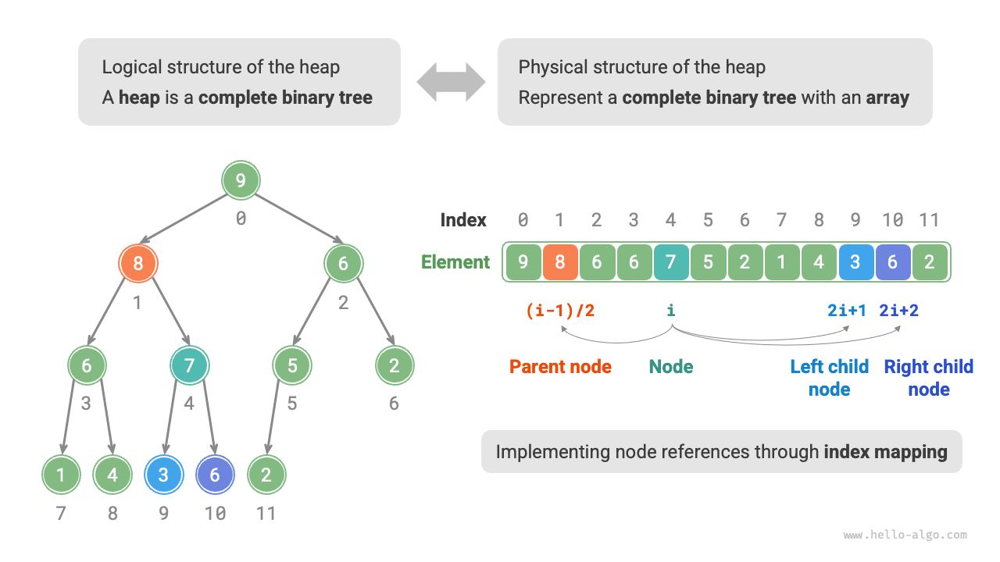
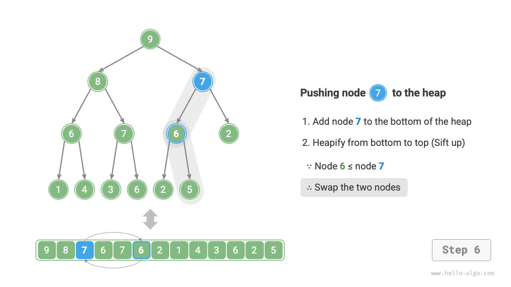

Topic 4 · Priority Queues & Binary Heaps
Complete syllabus synthesis · Complexity matrices, invariants & 1-based index arithmetic
[!!!] CORE MUST-KNOW
COMP20003 EXAM · 15-20 MARKS
| Implementation Data Structure |
Enqueue (Insert) |
Delete-Min / Max |
Peek-Min / Max |
Exam Trade-off / Bottleneck Justification |
| Unsorted Array |
O(1) append |
Θ(N) linear scan |
Θ(N) linear scan |
Fast insertion; extracting minimum requires checking all N slots. |
| Unsorted Linked List |
O(1) push head |
Θ(N) linear scan |
Θ(N) linear scan |
Insert at head instant; pop requires linear traversal to locate minimum node. |
| Sorted Array |
Θ(N) shift right |
O(1) pop tail |
O(1) read tail |
Extraction instant at array end; insertion forces brutal O(N) element shift. |
| Sorted Linked List |
Θ(N) scan insert |
O(1) pop head |
O(1) read head |
Extraction instant at head; insertion takes linear scan to find target position. |
| Binary Heap (Array-backed) |
O(log N) up-heap |
O(log N) down-heap |
O(1) root A[1] |
Optimal general-purpose balance: log-height ancestor tree folded into array. |
| [4.1.3] Bounded Chained Hash |
O(1) bucket push |
O(R) scan / O(1) am. |
O(R) scan non-empty |
VALID ONLY IF key range is bounded [0, R]. FAILS if k mod 101 mixes keys! |
[4.2.1] TWO UNBREAKABLE INVARIANTS
1. Shape: Complete Binary Tree. Filled left-to-right on bottom level; strictly zero vacant interior slots.
2. Order: Max-Heap: A[Parent] ≥ A[Child] (Root A[1] max). Min-Heap: A[Parent] ≤ A[Child] (Root A[1] min).
* Note: Sibling order is completely unconstrained!
[4.2.2] Index Arithmetic Dual Reference
| Operation |
1-Based (Exams) |
0-Based (C Code) |
| Root Index | index = 1 | index = 0 |
| Parent(i) | ⌊i / 2⌋ | ⌊(i - 1) / 2⌋ |
| Left / Right Child | 2i / 2i + 1 | 2i + 1 / 2i + 2 |
| Leaves Range | ⌊N/2⌋ + 1 … N | ⌊N/2⌋ … N - 1 |
| Last Internal Node | ⌊N/2⌋ | ⌊N/2⌋ - 1 |
PRO-TIP · INSTANT LEAF FORMULA
Exam Q: Which indices hold leaves for N = 11?
NEVER draw the tree! Last internal node is ⌊11 / 2⌋ = 5. Leaves are instantly indices 6, 7, 8, 9, 10, 11. Free marks in 5s!
[4.2.3] WHY ARRAY > LINKED LIST
"Array computes parent/child indices in O(1) arithmetic (⌊i/2⌋, 2i). Linked list lacks random access, taking O(N) traversal to reach insertion tail or parent, degrading ops to O(N)."
Insertion Trace (Up-Heap / Sift-Up)
Algorithm: Put key at next open slot A[N+1]; N++. While i > 1 & A[i] > A[⌊i/2⌋], swap with parent; i = ⌊i/2⌋.
Asymmetry Rule: Strictly 1 comparison per level (against parent only).
Worst-case: ≤ ⌊log&sub2; N⌋ comparisons along root path → O(log N).
Deletion Trace (Down-Heap / Sift-Down)
Algorithm: Pop root A[1]; move A[N] to root; N--. While 2i ≤ N, find larger child c, swap if A[i] < A[c]; i = c.
Asymmetry Rule: Requires 2 comparisons per level (1st: compare children; 2nd: compare winner with parent)!
Worst-case: ≤ 2⌊log&sub2; N⌋ comparisons → O(log N).


Figure 1 & 2 · Mechanical Trace Invariant: Left: Array-tree memory isomorphism. Right: Up-heap isolates ancestor tube; unaffected subtrees remain completely untouched.
[4.3.1] Top-Down Sequential Build
Procedure: Empty heap; repeatedly insert N raw items using upheap.
Complexity: Worst-case is Θ(N log N).
Why Slower? Half of nodes are leaves at tree bottom (depth ≈ log N). Each leaf must travel maximum distance upward to root!
[4.3.2] Bottom-Up Floyd Heapify
Procedure: Place N items in array; loop down to root:
for (i = ⌊N/2⌋; i ≥ 1; i--) downheap(i);
Complexity: Strict linear Θ(N) time (performs ⌊N/2⌋ down-heaps).
Proof: Most nodes are at bottom with height h = 0, 1. Geometric sum ∑ (h/2h) = 2 → Θ(N)!
| Strategy Name |
Algorithm Pipeline |
Time Complexity |
Aux Space |
Verdict when m ≪ N |
| Method A: Full Sort |
Quicksort/Mergesort entire array; return A[m] |
Θ(N log N) |
O(1) ~ O(N) |
Wasteful: sorts remaining N - m unneeded items. |
| Method B: Partial Min-Heap |
Bottom-up Min-Heapify Θ(N) + m × deleteMin() |
O(N + m log N) |
O(1) in-place |
Optimal offline array; strictly beats sorting when m ≪ N. |
| Method C: Size-m Max-Heap |
Build Max-Heap of first m keys Θ(m); for rest: if < root, replace & downheap |
O(N log m) |
O(m) heap |
Optimal for streaming / huge data where N does not fit in RAM! |
LETHAL EXAM TRAP · ZERO COMPRESSION (0 MARKS WARNING)
Pitfall: Writing Floyd's makeHeap takes O(N log N) because it calls downheap N/2 times. Marks = 0!
Full-Mark Justification: "Downheap cost is proportional to node height, not depth. Half of all nodes (N/2) are leaves requiring 0 swaps; N/4 nodes have height 1, N/8 have height 2. Converging geometric sum ∑ (h / 2h) = 2 gives Θ(N)."